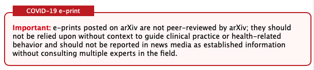

Chapter 2 - Sharing Your Ideas With The World
You've done it: you had an idea, found a research mentor to develop it with, and produced some novel results! Now what? It's time to share your findings with the Computer Science community. But what exactly is that community? How is it structured? Who gets to decide which ideas are sound and worthy of debate, and how are these decisions made? With two leading professional organizations and several popular open access archives, the world of academia has boundless opportunities for advancing the bounaries of knowledge in computing.
ACM & IEEE: Alphabet Soup
To share your ideas with the world, you need a world to share them with; a community of interested professionals and stakeholders. The Association for Computing Machinery (ACM) and the Institute of Electrical and Electronics Engineers (IEEE) provide this for the field of computer science. Each is a "technical professional society" by the IEEE's definition, but this encompasses so much more than just a title or membership. The IEEE and ACM coordinate conferences, journals, books, magazines, technical standards, and more, representing the process of peer review and providing professional networks that are invaluable for academics.
The ACM and IEEE are long-standing organizations, founded in 1947 and 1963, respectively. The IEEE was a merger of two separate technical societies, the American Institute of Electrical Engineers and the Institute of Radio Engineers, and is dedicated to studying interdiscplinary applications of electronics, which doesn't always necessarily involve computing. The IEEE has 39 "societies" dedicated to a particular field of study, which range from applications in medicine and biology to robotics, education, and aerospace.
The ACM is far more computing-focused, with the stated goal of advancing "the science, development, construction, and application of the new machinery for computing." Mirroring the IEEE's societies are the ACM's 39 Special Interest Groups (SIGs), which capture research areas including programming languages (SIGPLAN), software engineering (SIGSOFT), and human-computer interaction (SIGCHI).
Both the ACM and IEEE broadly overlap, but the IEEE can be viewed as studying applied electronics, which happens to include applied computing, while the ACM studies computing, which includes its applications in society.
Along with SIGS and Societies, both organizations share similar features. Each has a tiered organizational structure, with a central governing body and local chapters. Multiple paid tiers of membership are offered, with student tiers being the most relevant for undergraduates. Membership is necessary to submit to conferences sponsored by each organization. Each also collects and displays its proceedings in central digital repositories: the IEEE Xplore and ACM Digital Library. Distinguished members of each organization can also be nominated for awards. The highest honor of the ACM is the Turing Award, while the IEEE offers the IEEE Medal of Honor.
However, with its broader scope, the IEEE hosts 300 annual conferences to the ACM's 170 and publishes 130 journals to the ACM's 50. Neither are necessarily in competition; both are relevant to the field of computer science, and it is likely that one or the other will be more relevant to you, depending on your field of choice. For a more detailed look at professional computing societies, visit the IEEE and ACM websites; both organizations have a massive scope and history that is only touched upon here.
Where to next?
Now that you've looked into the ACM and IEEE, it's time to find out which one of their publications is the right choice for your work. With such a plentitude of options, it might seem impossible to make the perfect choice. However, by considering the domain, scope, and urgency of your work, it's quite feasible to take the next steps toward publication.
The first question you should ask is whether your work would be more approriate as a journal article or as part of a conference proceedings: the collective set of works submitted to an academic conference. As a field, Computer Science is far more conference-oriented.
This might seem obvious when comparing the number of annual ACM and IEEE conferences to the number of journals, but the disparity between journals and conferences reaches further than sheer quantity of venues. Vrettas and Sanderson (2015) observe that for all conference and journal publications by Austrailian researchers in 2010, 74% of all conferences across all academic fields were attributed to CS, with a measly 4% of journal publications. They used this data to deduce the impact of conference submissions versus journal articles and found that "a small number of elite conferences" have the highest citation rates in the field.
So, from one particular viewpoint, it's most statistically likely that your submission will be to a conference. Both the IEEE and ACM categorize conferences at least partially through their Special Interest Groups (SIGs) and Societies, so the easiest way to find relevant conferences is to pick a SIG or Society that aligns with your research interest and look at the conferences that it hosts annually. If you are an undergraduate student, you'll likely have a research mentor that you can talk to who has experience in publishing to peer-reviewed venues, and they may already have a plan in mind for publication.
Each conference has a different approach to the format of published works. As a case study, consider POPL, the ACM's leading conference in Programming Languages under the SIGPLAN Special Interest Group. POPL has several "Tracks" that accept papers. The leading "POPL" submission Track expects papers with +25 pages total, along with 25-minute presentations that take place during the event itself. However, POPL also publishes 3 page "extended abstracts" for its Student Research Competition and sponsors both Workshops and Tutorials. Other conferences provide a mix of Tracks with multiple short paper proceedings in-between the length of full submissions and extended abstracts, providing a solid starting point for new researchers.
LaTeX: It's Pronounced "GIF"
Submission & Peer Review
Whitepapers: Why Wait?
Formal venues aren't the only way to share research with the world. Online repositories such as Cambridge University's arXiv provide a space for authors to publish their works without peer review. This has several key benefits. If your research idea is incredibly novel in a competitive field, publishing fast and early creates a record of priority, attributing the discovery to you. For example, famed mathematician Grigoriy Perelman's solution to the Poincare Conjecture was first published to the arXiv. Though it is not guaranteed, open-access archives may also allow for peer review at a broader scale, given that articles are available for anyone with an internet connect, and not hidden behind the paywalls common to major academic journals.
The current trend towards "open-access", where publications are avaliable to all, free-of-charge, has blurred the lines as to what constitutes a whitepaper. The same open-access repositories that distribute pre-prints are also used for post-prints, which are publications that have been accepted to a peer-reviewed conference or journal and uploaded to an open-access repository.
The convenient term "eprint" covers both of these categories, but be careful not to associate it with any degree of peer review or trustworthiness, given that it's been a tradition for academics to upload "joke submissions" to the arXiv. The arXiv and other similar repositories do have some degree of vetting, especially for certain categories like COVID-19 research.

Given the mix of submission types, publication categories, and the sheer dishonesty of humans, open-access archives generally do not guarantee any standard of peer review or validity. Be cautious and think critically lest you nick yourself on the cutting-edge of research.
Conclusion
In a world of academic societies, conferences, publishing, peer review, and whitepapers, it's crucial to ask for help. It's unreasonable to expect anyone to navigate academia alone, and the point of collaborative research in a global community is to connect with others. Make sure to trust in the guidance of your mentors and peers, and remember that asking for help is a sign of strength, not of weakness.